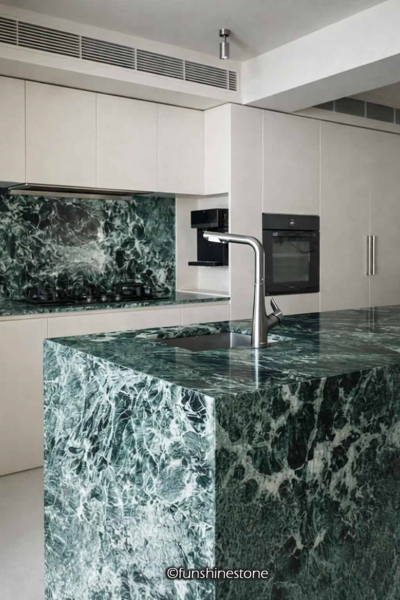
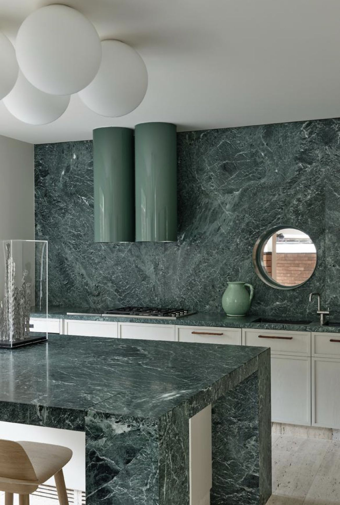
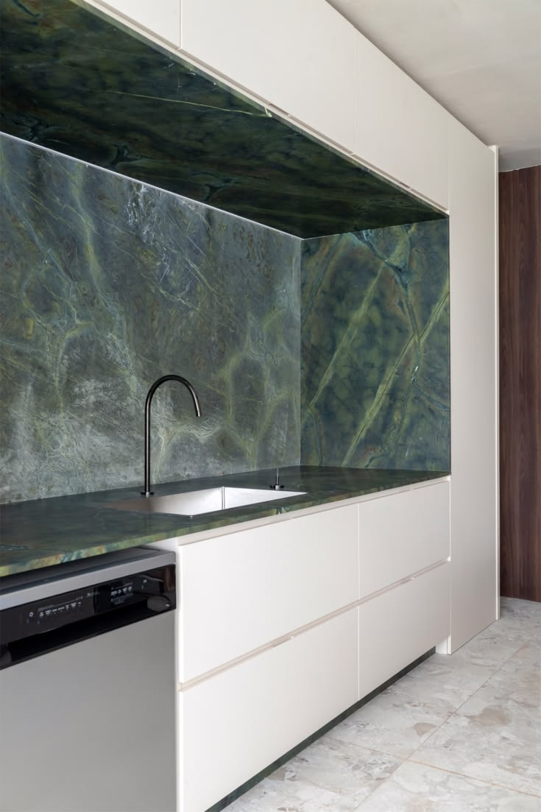
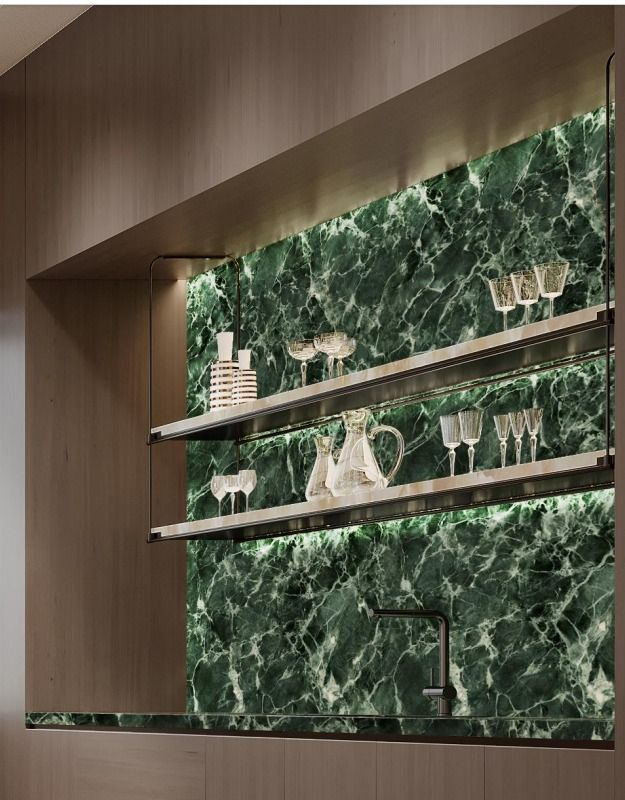

Exotismo e Singularidade
O Mármore Verde Alpi (também conhecido como Verde Issogne) é extraído na região do Vale de Aosta, nos Alpes Italianos. Trata-se de uma rocha metamórfica serpentinítica que se destaca pela sua intensa coloração verde-floresta escura, entrecortada por uma rica rede de veios mais claros e filamentos calcíticos esbranquiçados.
Associado a projetos de grande personalidade artística, ele é a escolha ideal para quebrar a neutralidade dos espaços e criar pontos focais de extremo bom gosto. Sua textura compacta permite um polimento espelhado impecável, que reflete a luz ressaltando a profundidade do verde natural.
Aplicações Recomendadas
Recomendado principalmente para uso interno como elemento de contraste em projetos modernos:
- Painéis de parede de salas de estar e recepções
- Lavatórios de lavabo e banheiros integrados
- Tampos de mesas laterais ou de jantar exclusivas
- Soleiras, rodapés e frisos de revestimento
Ficha Técnica
Projetos Executados em Verde Alpi




Deseja este material no seu projeto?
Fale diretamente com os nossos projetistas no WhatsApp e receba um estudo de paginação e orçamento personalizado para sua obra.
Solicitar Orçamento Grátis